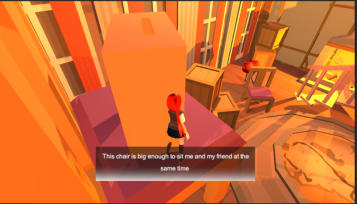
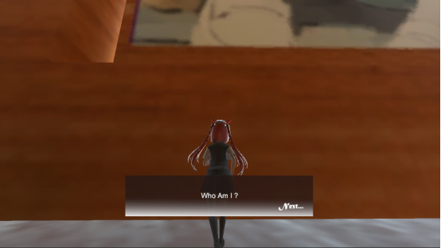

Finding Friend RPG
基于心理依赖与情感寄托的独立解谜游戏探索
UNITY 3D · C# · NARRATIVE DESIGN · PSYCHOLOGY
01 · 核心叙事 Narrative Concept
根据 GDD 设计文档，本项目探讨了“情感寄托物”在个体成长中的双面性。游戏通过一个三层结构的“娃娃屋”隐喻人类的意识深处。玩家需在失衡的记忆碎片中寻找真相，解开主角对儿时玩偶过度依赖的心理结节。
潜意识空间
利用建筑空间的垂直分布映射心理状态，从明亮的表层意识到底层的阴暗创伤。
情感交互
核心机制不仅是解谜，更是通过与环境物体的交互触发主角的内心独白与情感回馈。
冲突具象化
将心理压力转化为“影子”障碍，玩家必须在规避恐惧与寻求真相之间寻找平衡。
02 · 空间设计 Space & Level Design
Top Floor: 理想化的记忆
顶层采用高饱和度、柔和的光影设计，象征着主角试图维持的完美表象。这里包含大量的交互细节，用于建立最初的叙事悬念。

Bottom Floor: 被压抑的真相
底层空间窄闭且色调阴冷。作为游戏的高潮部分，玩家在这里需要面对被具象化的心理矛盾，完成最终的情感解脱。
